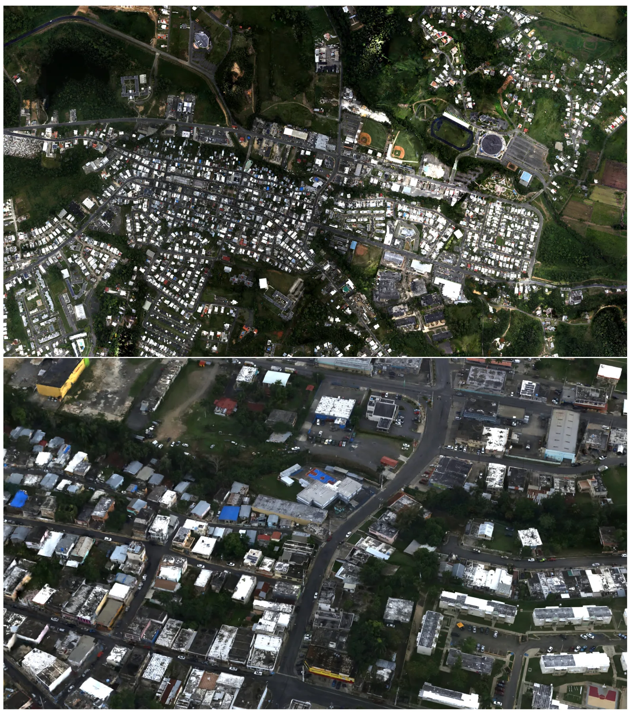
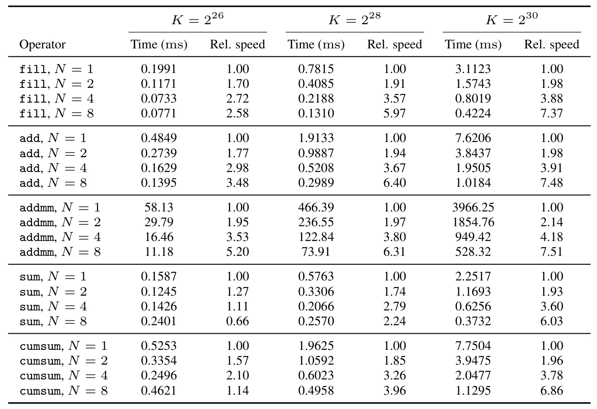
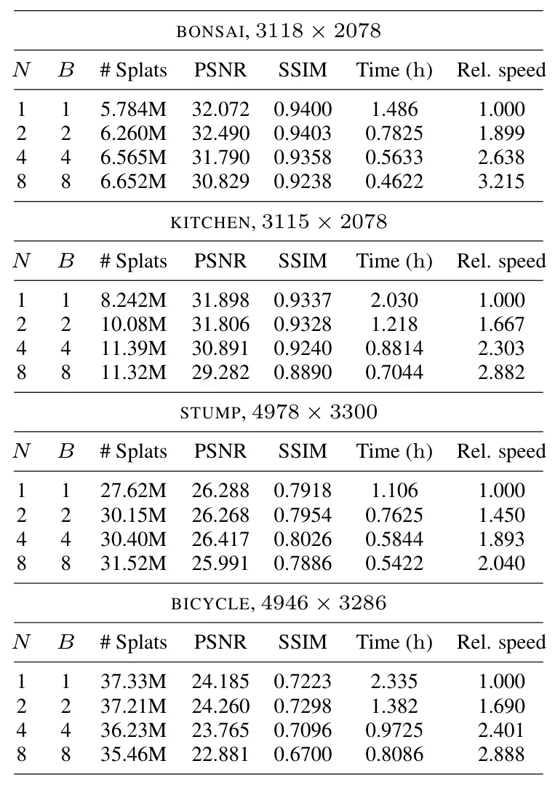
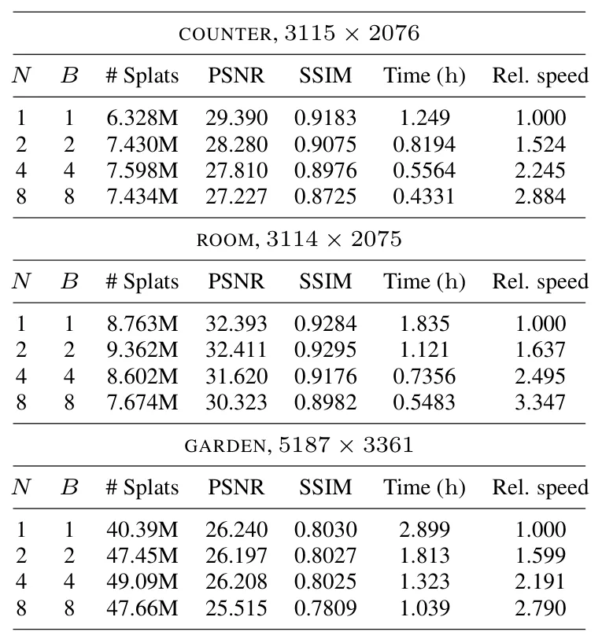
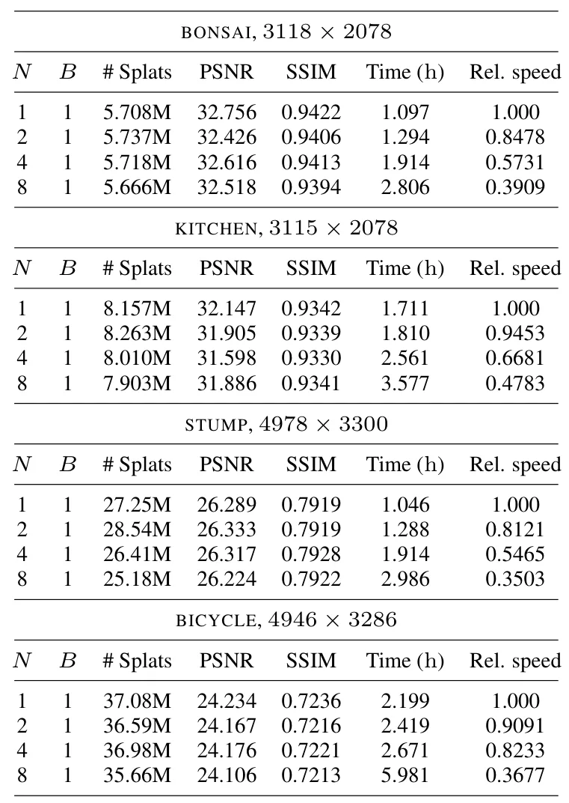
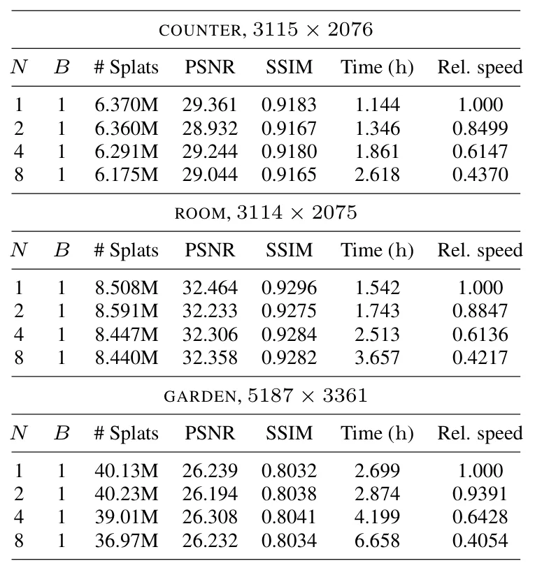

面向多 GPU 高斯溅射的可扩展 PyTorch 抽象A Scalable PyTorch Abstraction for Multi-GPU Gaussian Splatting
对大尺度 3DGS 地图、城市数字孪生和机器人数据后处理很关键；与 SLAM 前后端算法不直接相关，但工程基础设施价值很高。
一句话工作总结
该工作用 PyTorch 后端把 3DGS 参数与算子透明分布到多 GPU，展示十亿级 splats 的城市级重建。
摘要
3D Gaussian Splatting 已成为真实世界神经重建中的热门方法，但常受计算和显存限制，难以扩展到更高分辨率和更大场景。本文提出一种多 GPU Gaussian Splatting 方法，通过一个 PyTorch backend 将 Gaussian 参数和 splatting operators 分布到多张 GPU。该 backend 使用 CUDA unified memory 与 NVLink，在 operator 层完成分布式执行，因此模型代码无需显式处理跨设备通信。更广义地，该 backend 将多 GPU 暴露为一个聚合 PyTorch device，并可支持其他 PyTorch operators。作者展示了包含超过 10 亿 Gaussian splats、具有街景细节的城市级重建，规模超过当前 SOTA 25 倍以上。
Gaussian splatting methods have become increasingly popular for neural reconstruction of the real world. However, they are often limited in scale and resolution due to compute and memory constraints. We present a multi-GPU Gaussian splatting approach that scales reconstruction to higher resolutions and larger scenes while abstracting away the code complexity typically associated with distributing a model. To accomplish this, we propose a PyTorch backend that distributes the Gaussian parameters and splatting operators across GPUs via CUDA unified memory and NVLink. Because distribution occurs at the operator level, the model code requires no explicit cross-device communication. More broadly, the backend exposes multiple GPUs as an aggregate PyTorch device and supports other PyTorch operators. We demonstrate city-scale reconstructions with street-level detail consisting of over 1 billion Gaussian splats, more than 25 times as many as the current state of the art.
中文解读摘录
- 作者：Matthew Cong, Francis Williams, Jonathan Swartz, Mark Harris, Sanja Fidler, Ken Museth；类别：cs.CV / cs.DC / cs.GR / cs.LG；发布日期：2026-06-10；备注：14 pages, 6 tables, 2 figures；采集 score=13
- 核心问题：3DGS 在真实大场景重建中受单 GPU 显存与算力限制，难以扩大到城市级、街景级细节，同时多卡分布式实现通常要求模型代码显式处理跨设备通信。
- 方法亮点：提出一个 PyTorch backend，把 Gaussian 参数和 splatting operators 通过 CUDA unified memory 与 NVLink 分布到多 GPU；分布发生在 operator 层，模型代码可把多张 GPU 视作聚合 PyTorch device，不需要手写跨设备通信。
- 结果信号：展示了包含 超过 10 亿 Gaussian splats 的城市级重建，数量超过当前 SOTA 25 倍以上，并保持街景级细节。
- 关注价值：这更像 3DGS 系统/基础设施论文，不是 SLAM 算法；但对大尺度机器人地图、城市数字孪生和长序列 Nerfstudio/3DGS 重建非常关键。后续应关注显存分页、NVLink 依赖、训练/渲染吞吐，以及是否能接入已有 COLMAP/SLAM 位姿和地图分块流程。
图表/页面预览

{kind=link}

{kind=link}

{kind=link}

{kind=link}

{kind=link}

{kind=link}
